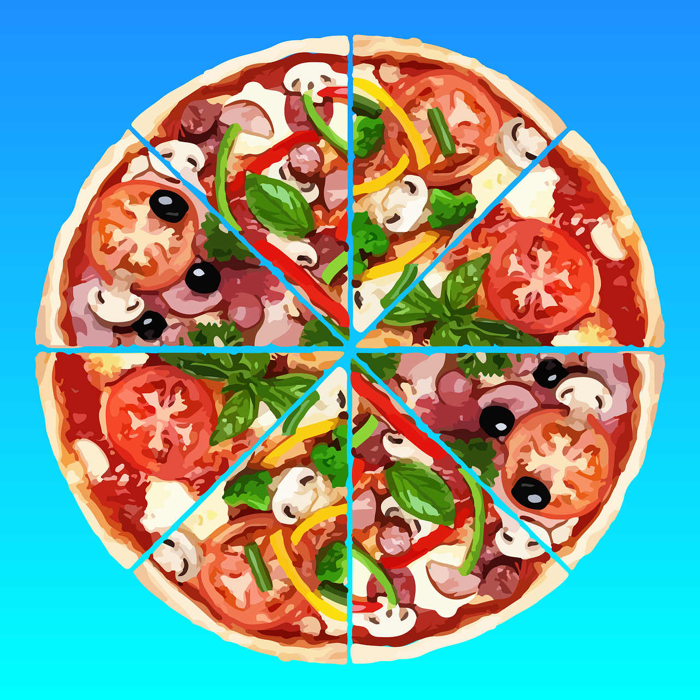

What You Should Know – GarageBand: Rhythm of Ratios
 Important Vocabulary
Important Vocabulary
- Equivalent Ratio - two ratios are considered equivalent if they represent the same proportion between two numbers (example: 2:4 is equivalent to 1:2)
- Fraction - represent parts of a whole and are written in the form of a numerator over a denominator
- Measure (Musical) - a measure helps to organize music by separating it into parts and it helps musicians keep track of the rhythm in a song - it has a specific number of beats
- Ratio - a comparison between two things using numbers
- Rhythm - a special pattern in music where different parts come back in a specific order, creating flow of sound as time goes by
Fractions
Fractions represent parts of a whole and are written in the form of a numerator over a denominator. The numerator is the top number in a fraction represents the number of parts you have. The denominator is the bottom number in a fraction shows how many equal parts make up the whole. Fractions are like secret codes for dividing things up! They tell you how many pieces you have compared to the whole thing.
Imagine you're sharing a delicious pizza with your friends. The entire pizza is one whole pizza before anyone takes a bite. Now, let's cut the pizza into equal slices. Each slice is a part of the whole pizza. If you cut the pizza into 8 slices and give each friend 2 slices, they each get 2 out of 8 total slices or two-eighths 2/8. The number of slices they have (2) is the numerator and it shows how much pizza they get, the total number of slices (8) is the denominator, and it tells you how big the whole pizza was. So, 2/8 tells you that each friend gets 2 slices out of the 8 total slices in the pizza.

.
Ratio
ratio expresses the relationship between two quantities and is written as a fraction. The most common ways to write a ratio is using the colon (:) symbol, fractions notation (a/b), or using the word "to." Ratios are everywhere! Ratios are in recipes (cakemix to water), maps (distance scales), even music (rhythm patterns).
Imagine you're making a smoothie, and you need two scoops of strawberries for every one scoop of blueberries. That's a ratio: 2:1.
You can write this ratio in a few ways:
- Colon Symbol: 2:1 = two scoops of strawberries: one scoop of blueberries
- Fraction Notation: 2/1 = two scoops divided by one scoop
- Using the Word “to”: two scoops of strawberries to one scoop of blueberries
Equivalent Ratios
Equivalent ratios represent the same relationship between two quantities, even though the numbers themselves might be different. You can create multiple equivalent ratios by multiplying or dividing both parts of a ratio by the same number.
Sometimes, different combinations can still make the same delicious smoothie if they have equivalent ratios. For example, 4 scoops of strawberries with 2 scoops of blueberries (4:2) is the same ratio as 2:1, just with double the scoops! The smoothie would have the same taste because the proportion of strawberry scoops to blueberry scoops is the same, but you would have more smoothie to enjoy. Here's how to create an equivalent ratio:
-
Identify the original ratio: Make sure you know the two numbers that make up the ratio you want to work with. For example, 3:4 is a ratio of 3 to 4.
-
Choose a multiplier: Pick a number that you'll multiply both parts of the ratio by. You can use any number you like, but 2, 3, 5, and 10 are common choices.
-
Multiply both parts: Take the original ratio and multiply each number in it by the multiplier you chose. For example, if you have the ratio 3:4 and you choose a multiplier of 2, you'd get (3 x 2) : (4 x 2), which equals 6:8.
-
Check for equivalence: To make sure the new ratio is equivalent, divide both parts of the new ratio by the original ratio. If you get the same number for both divisions, the ratios are equivalent. For example, 6:8 is equivalent to 3:4 because 6 ÷ 3 = 2 and 8 ÷ 4 = 2.
Examples:
If you double both parts of the ratio 4:5, you get 8:10, which is equivalent.
If you triple both parts of the ratio 1:2, you get 3:6, which is also equivalent.
If you divide both parts of the ratio 6:9 by 3, you get 2:3, another equivalent ratio.
Practice Ratios
Try identifying the ratios below.
You're making cookies that call for a 3:2 ratio of flour to sugar. If you use 6 cups of flour, how many cups of sugar do you need?
4 cups
A map has a scale of 1 cm : 5 km. What is the actual distance in kilometers if the measured distance on the map is 3 cm?
15 km
A song has a rhythm pattern of clap, clap, tap, tap. What is an equivalent rhythm pattern that keeps the same proportion of claps to taps?
2:2
A model airplane has a wingspan of 12 inches and a length of 16 inches. What is the ratio of the wingspan to the length? Write your answer in colon notation.
12:16 or 3:4
You have two bags of candy with different ratios of chocolate to gummy bears. Bag A has a 2:1 ratio, and Bag B has a 4:2 ratio. Are these bags equivalent in terms of chocolate to gummy bears? Explain your answer.
Yes. If you had one Bag A, you would have 2 chocolates for every gummy bear.
If you had two of Bag A you would have 4 chocolates and 2 gummy bears which is the same ratio as Bag B.
Or
2 x 2 = 4
2 x 1 = 2
A magical potion requires a 3:1 ratio of moonstones to dragon scales. You have 9 dragon scales. How many moonstones do you need to keep the ratio equivalent?
27
Since you have 9 dragon scales (which is like 3 piles), you'll need 3 times as many moonstones, which is 3 * 9 = 27 moonstones.
A treasure map uses a scale of 2 cm : 4 km. A hidden cave is marked 6 cm away on the map. How far away is the cave in real life (in kilometers)? Find another equivalent scale that shows the same distance.
12 km
2 cm map : 4 km real = 6 cm map : x km real
2 cm * x km = 4 km * 6 cm
2x = 24
x = 12 km
Equivalent ratio : 1:2 or 4:8
A drumbeat goes boom, clap, boom, clap. Create two different equivalent rhythm patterns using only booms and claps. Remember, they must have the same proportion of booms to claps!
The original ratio is 1:1 so any answer that is the same two numbers works.
A bakery sells cookies in two sizes. The small cookies have a 5:2 ratio of chocolate chips to raisins, while the large cookies have a 10:4 ratio. Are the chocolate chip proportions in the two sizes equivalent? Explain your reasoning.
Yes.
We can simplify both ratios by dividing each side by the greatest common factor (GCF).
For the small cookies, the GCF is 1, so the ratio stays the same (5:2).
For the large cookies, the GCF is 2, so the simplified ratio is 5:2 (divide both sides by 2).
Rhythm
Rhythm is like the heartbeat of music. It's the pulse that makes us tap our feet, nod our heads, and move our bodies.
Beats: Imagine a drummer tapping their foot steadily. Those taps are the beats, the foundation of rhythm. In most popular music, beats come at regular intervals, like a ticking clock.
Measures: Now, imagine grouping those beats together. In music, these groups are called measures, often marked by vertical lines on the staff. Measures help organize the music and make it easier to read and play.
Simple Rhythmic Patterns: Different combinations of beats within a measure create rhythmic patterns. The notes are the musical characters that reside on the lines and spaces. Think of them as symbols representing different pitches and durations. Whole and half notes are empty ovals and the quarter notes and eighth notes are filled in. They come in various shapes and sizes, dictating how long they are held:
- Whole Note: A whole note lasts for four beats.
- Half Note: A half note lasts for two beats.
- Quarter Note: A quarter note lasts for one beat. There are 4 beats in a measure.
- Eighth Note: An eighth note lasts for half a beat. There are 8 beats in a measure.
Percussion in GarageBand
GarageBand offers a wide variety of drum beats and individual drum sounds, perfect for crafting rhythmic ratios! Here's a breakdown of some helpful options:
Percussion Loops:
- Electronic: Hi-hats, claps, snares, kicks, and synth percussion in various tempos and styles (house, trap, drum & bass).
- Acoustic: Realistic drum kits covering rock, pop, jazz, funk, and more. These can be further broken down into individual drum sounds.
- World: Traditional percussion instruments like congas, bongos, tablas, and shakers
Individual Drum Sounds:
- Kick Drums: Deep bass drums in various tones and articulations (classic, punchy, boomy).
- Snare Drums: Crisp snares with different rimshots and ghost notes for added complexity.
- Hi-Hats: Closed, open, and sizzle hi-hats for creating rhythmic patterns and accents.
- Cymbals: Crashes, rides, splashes, and cowbells for punctuation and effects.
Other Percussion:
- Toms, bongos, congas, tambourines, shakers, and woodblocks for adding texture and spice.
Career Connection and Real-World Application
Game Developers
Creating engaging gameplay often involves designing rhythmic elements like sound effects and level progression. Rhythmic sound effects can guide players' actions, highlight key moments, and build anticipation. For example, in a rhythm game, the beat of the music drives gameplay, while in a racing game, engine revs and gear changes create a rhythmic pulse that reinforces the feeling of speed. Music scores often use rhythmic elements to create atmosphere, set the pace of gameplay, and even guide players through levels. Fast-paced rhythms during battles can heighten tension, while calming melodies in exploration sections can promote relaxation.
Chef
Chefs must master proportions when they create interesting and tasty dishes. Balancing flavors in a dish hinges on precise ratios. For example, too much acid in a sauce can overpower delicate herbs. Understanding ratios allows chefs to adjust ingredients, creating delicious flavor profiles that tantalize the taste buds. From creamy soups to flaky pastries, achieving the desired texture often relies on specific ingredient ratios. The ratio of flour to liquid in a batter determines its thickness and rise, while the fat-to-liquid ratio in a sauce affects its smoothness and richness. Even cooking methods are influenced by ratios. The ratio of heat to cooking time determines the degree of doneness for meats.
Dancer
Rhythmic understanding is key for dancers to interpret music and translate the music's rhythmic language into physical expression. A dancer's ability to listen and internalize the rhythm of the music is fundamental. They must identify beats, accents, syncopations, and phrasing to translate them into movement. Different dance styles have their own signature rhythmic nuances. Mastering footwork patterns, isolations, and transitions all require precise timing and coordination with the music's rhythm. For example, tap dancers create intricate percussive sounds with their feet, while ballet dancers execute graceful leaps and turns in perfect synchrony with the musical score. Rhythm can also be a powerful tool for conveying emotions in dance. A dancer can use variations in tempo, emphasis on beats, and dynamic changes to express joy, sorrow, anger, or any other emotion. The timing and intensity of their movements become part of the narrative, allowing them to tell a story without words.